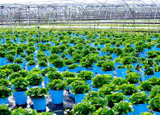
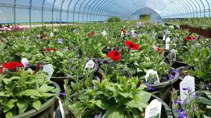

A nursery is a place where plants are propagated and grown to a desired size. Mostly the plants concerned are for gardening, forestry or conservation biology, rather than agriculture. They include retail nurseries, which sell to the general public, wholesale nurseries, which sell only to businesses such as other nurseries and to commercial gardeners, and private nurseries, which supply the needs of institutions or private estates. Some will also work in plant breeding.

There are a number of different types of nurseries, broadly grouped as wholesale or retail nurseries, with some overlap depending on the specific operation. Wholesale nurseries produce plants in large quantities which are sold to retail nurseries, landscapers, garden centers, and other retail outlets which then sell to the public.[3]
With the objective of fitting planting stock more able to withstand stresses after outplanting, various nursery treatments have been attempted or developed and applied to nursery stock. Buse and Day (1989),[6] for instance, studied the effect of conditioning of white spruce and black spruce transplants on their morphology, physiology, and subsequent performance after outplanting. Root pruning, wrenching, and fertilization with potassium at 375 kg/ha were the treatments applied. Root pruning and wrenching modified stock in the nursery by decreasing height, root collar diameter, shoot:root ratio, and bud size, but did not improve survival or growth after planting. Fertilization reduced root growth in black spruce but not of white spruce.
